The Cherokee Nation, the Trail of Tears, and the question of ethnic cleansing
Georgia to Indian Territory · 1828–1839
Background: AI-generated historical interpretation of a Cherokee family on the road west, 1838 (1830s American oil-painting style); not a surviving historical image
Cold open · Cherokee Nation, spring 1838
Soldiers came to Rebecca Neugin's door when she was three years old.
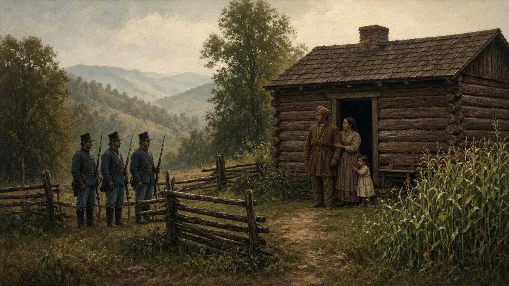
AI-generated historical interpretation (1830s American oil-painting style); not a surviving historical image.
"When the soldiers came to our house my father wanted to fight, but my mother told him that the soldiers would kill him if he did and we surrendered without a fight. They drove us out of our house to join other prisoners in a stockade."
Rebecca Neugin, recalling 1838, as recorded by historian Grant Foreman in 1932
The question: Her nation had a constitution, a newspaper, and a Supreme Court ruling on its side.
How did a nation that won in court end up in a stockade?
Source: Rebecca Neugin, in Grant Foreman, Indian Removal (University of Oklahoma Press; 1974 printing, p. 242).
The homeland · 1820s
The Cherokee Nation held its homeland where four states met, and Georgia claimed it.
The land: farms, towns, and a capital at New Echota, in today's northwest Georgia.
The people: about 16,000 Cherokee still lived in the East in 1835.
The neighbors: Creek, Choctaw, Chickasaw, and Seminole; some 60,000 people in five nations.
The claim: Georgia said every acre inside its borders belonged under Georgia law.
The Cherokee were not a remnant. They were a nation with borders, and Georgia drew its own borders around them.
Five Tribes: the five southeastern nations removed in the 1830s. White Americans later called them the "Five Civilized Tribes," a label that ranked peoples by how much they resembled white Americans.
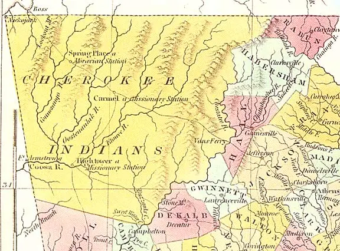
Detail of a map of Georgia, Anthony Finley, Philadelphia, 1830, showing "Cherokee Indians" in the state’s northwest. Public domain, via Wikimedia Commons.
Sources: Perdue & Green, The Cherokee Nation and the Trail of Tears (2007); 1835 Cherokee census (Henderson Roll); course case study, "Jacksonian Indian Removal."
Building a nation · 1821–1828
The Cherokee built a written language, a constitution, and a newspaper.
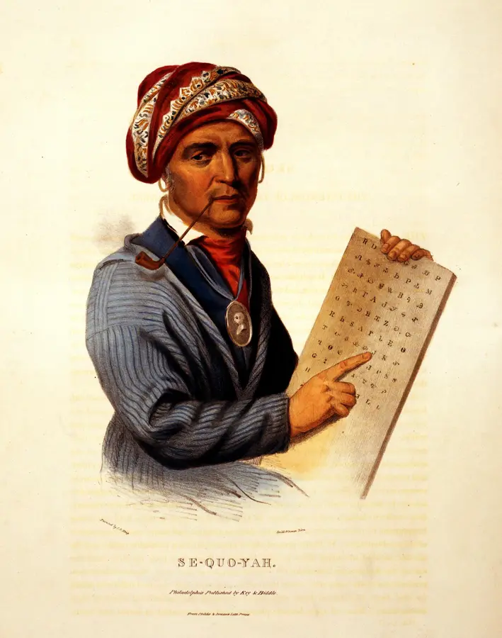
Sequoyah holding his syllabary. Lithograph after Charles Bird King, McKenney & Hall, 1836. Library of Congress. Public domain.
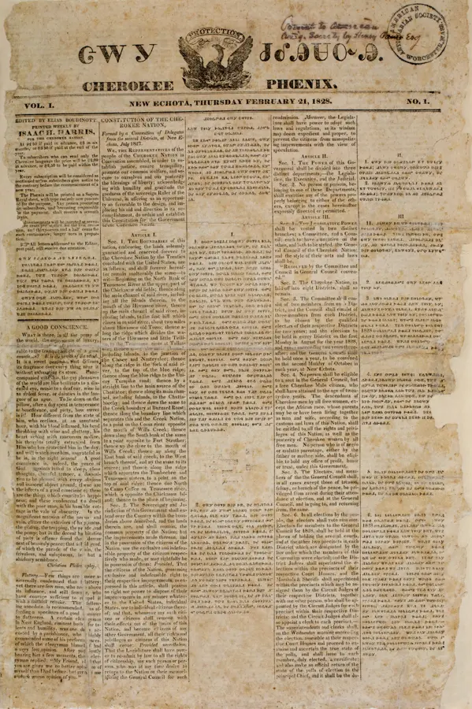
Cherokee Phoenix, first issue, New Echota, February 21, 1828. American Antiquarian Society. Public domain.
1821: Sequoyah finished a syllabary; within a few years thousands of Cherokee could read and write.
1827: a written constitution created a legislature, courts, and a principal chief.
1828: the Cherokee Phoenix, edited by Elias Boudinot, printed in English and Cherokee.
A hard truth: by 1835 wealthy Cherokee planters held more than 1,500 enslaved Black people.
The Cherokee did what U.S. "civilization" policy asked. It made them a stronger nation, not a safer one.
Syllabary: a writing system in which each symbol stands for a syllable. Sequoyah's had 86 symbols.
Georgia's claim · 1802–1832
Georgia wanted Cherokee land, and gold made it want it faster.
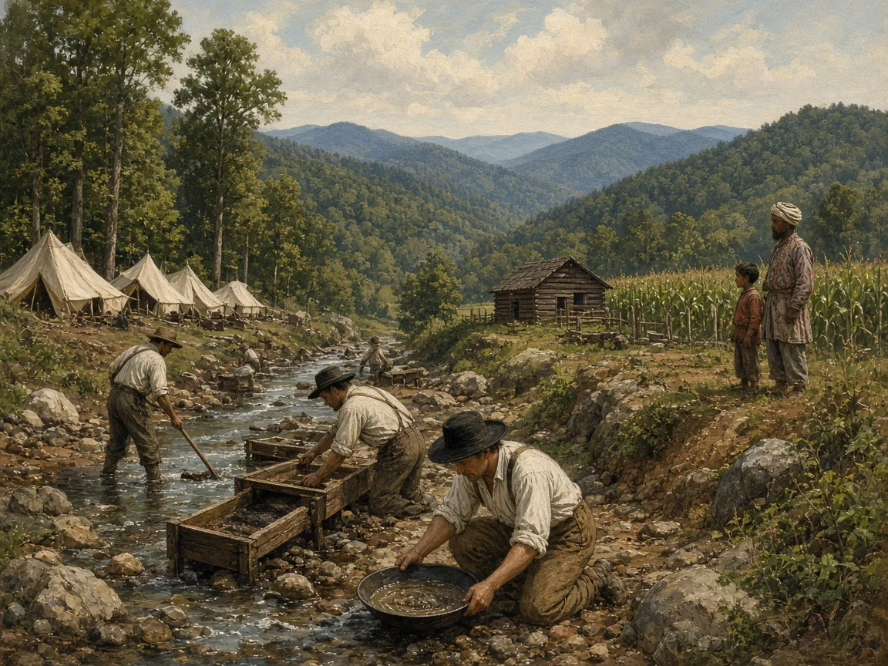
AI-generated historical interpretation (1830s American oil-painting style); not a surviving historical image.
1802: the U.S. promised Georgia it would end Indian land titles in the state "as early as the same can be peaceably obtained on reasonable terms."
1828–1829: gold near today's Dahlonega; thousands of prospectors poured into Cherokee country.
1828–1830: Georgia declared Cherokee laws void and barred Cherokee from testifying against whites.
1832: a state lottery handed Cherokee land to white Georgians.
Georgia did not wait for removal. It made staying unbearable.
Sources: Articles of Agreement and Cession (Compact of 1802); Georgia acts of 1828–1830; Perdue & Green (2007); Saunt, Unworthy Republic (2020).
The president · 1814–1830
Andrew Jackson came to the White House determined to move the southern nations west.
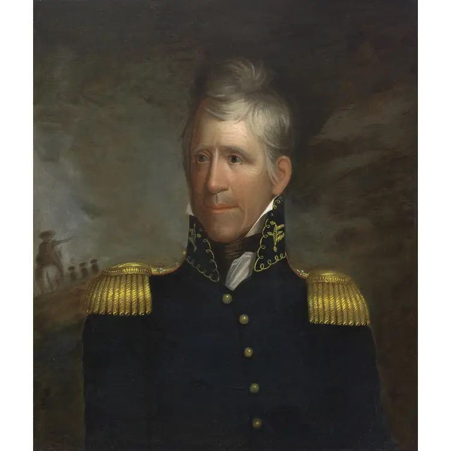
Andrew Jackson, by Ralph E. W. Earl, 1817. National Portrait Gallery, Smithsonian (NPG.65.78). Public domain.
1814: after defeating the Red Stick Creeks, General Jackson imposed the Treaty of Fort Jackson, taking about 23 million acres, including land of Creeks who had fought beside him.
1829: President Jackson told the Cherokee and Creek he would not stop states from ruling over them.
His argument: move west, beyond the states, and survive; stay, and live under state law.
Jackson called removal a kindness. The people being moved called it exile.
Sources: Treaty of Fort Jackson (1814); Remini, Andrew Jackson and His Indian Wars (2001); Howe, What Hath God Wrought (2007).
Primary source · Jackson's Second Annual Message, December 6, 1830
How did Jackson explain removal to Congress?
"It gives me pleasure to announce to Congress that the benevolent policy of the Government, steadily pursued for nearly thirty years, in relation to the removal of the Indians beyond the white settlements is approaching to a happy consummation. . . .
What good man would prefer a country covered with forests and ranged by a few thousand savages to our extensive Republic, studded with cities, towns, and prosperous farms . . . ?"
Andrew Jackson, Second Annual Message to Congress, December 6, 1830
Read closely, on your own:
Which words does Jackson use to make removal sound generous?
Whose view of the land does his question leave out?
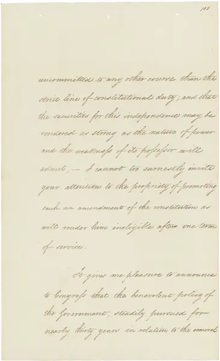
Jackson’s message, December 6, 1830, page 1 of the Senate copy. National Archives. Public domain.
Congress passed the Indian Removal Act by five votes.
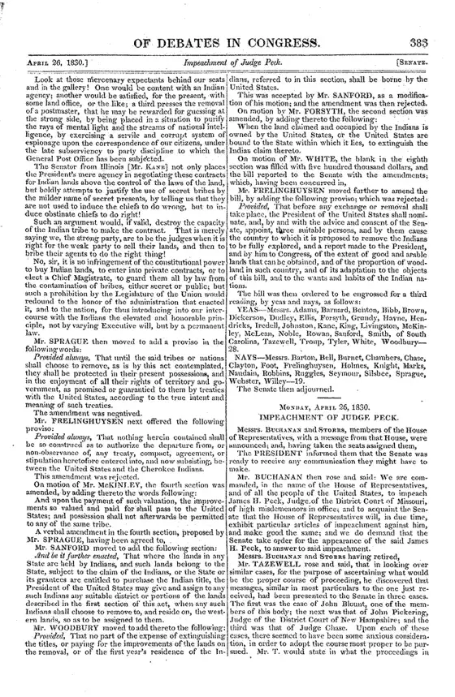
Senate debate on removal, Register of Debates, 21st Congress, April 1830. Library of Congress. Public domain.
The deal: the president could trade western land to tribes "as may choose to exchange" their eastern homes.
The promise: the U.S. would "forever secure and guaranty" the new land, with $500,000 to pay the costs.
The vote: Senate 28–19; House 102–97. Senator Theodore Frelinghuysen and Rep. Davy Crockett opposed it.
On paper, removal was a choice. Georgia's laws and Jackson's pressure took the choice away.
Sources: An Act to provide for an exchange of lands with the Indians residing in any of the states or territories, May 28, 1830 (4 Stat. 411); Register of Debates, 21st Congress, 1st Session.
Primary source · Cherokee address to the people of the United States, July 1830
"We wish to remain on the land of our fathers."
"We are not willing to remove . . . We wish to remain on the land of our fathers. We have a perfect & original right to remain without interruption or molestation. The treaties with us, and laws of the United States made in pursuance of treaties, guaranty our residence and our privileges and secure us against intruders."
Cherokee Nation, address to the people of the United States, July 1830; printed in the Cherokee Phoenix, July 24, 1830
Read closely, on your own:
What two things do the Cherokee say protect their right to stay?
How does this answer Jackson's picture of empty forest?
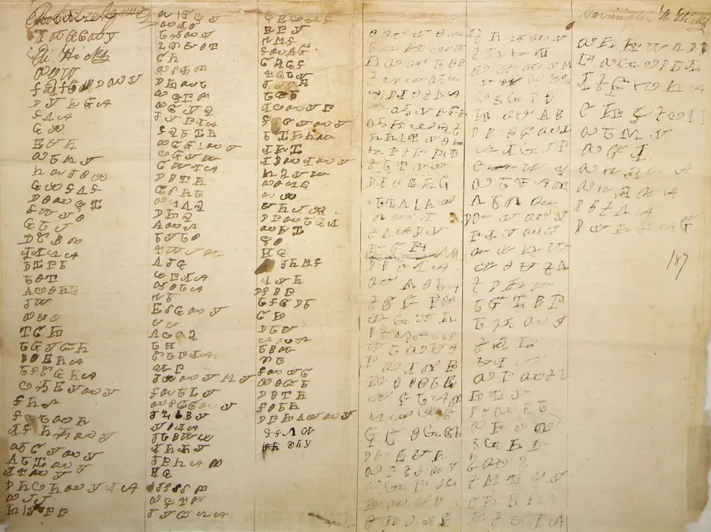
Signatures in English and Cherokee on a Cherokee memorial to the U.S. House of Representatives, February 15, 1830. National Archives. Public domain.
Memorial: a formal written petition to a government. Molestation: harassment, interference.
Appeal to the courts · 1831–1832
The Cherokee took Georgia to the Supreme Court, and in 1832 they won.
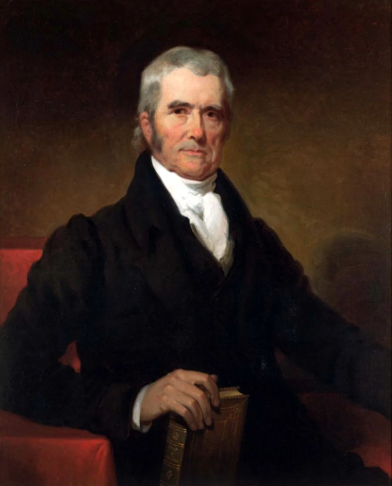
Chief Justice John Marshall. You met him in Lecture 1 as the judge who built federal power.
1831, Cherokee Nation v. Georgia: the Court called Indian tribes "domestic dependent nations" and would not hear the suit.
1831: Georgia sentenced missionary Samuel Worcester to four years at hard labor for living in the Nation without a state license.
March 1832, Worcester v. Georgia: the Cherokee Nation is "a distinct community . . . in which the laws of Georgia can have no force."
The highest court in the land agreed with the Cherokee.
Sources: Cherokee Nation v. Georgia, 30 U.S. 1 (1831); Worcester v. Georgia, 31 U.S. 515 (1832).
The answer · 1832–1833
Georgia ignored the ruling, and Jackson would not enforce it.
Georgia: refused to free Worcester; he stayed in prison until January 1833.
Jackson, April 7, 1832: the decision "has fell still born, and they find that it cannot coerce Georgia to yield to its mandate."
The famous line "John Marshall has made his decision; now let him enforce it" first appeared in print in 1864. He probably never said it.
1832: Georgia's lottery gave away Cherokee land while Cherokee families still lived on it.
A court can say what the law is. It cannot make a president act.
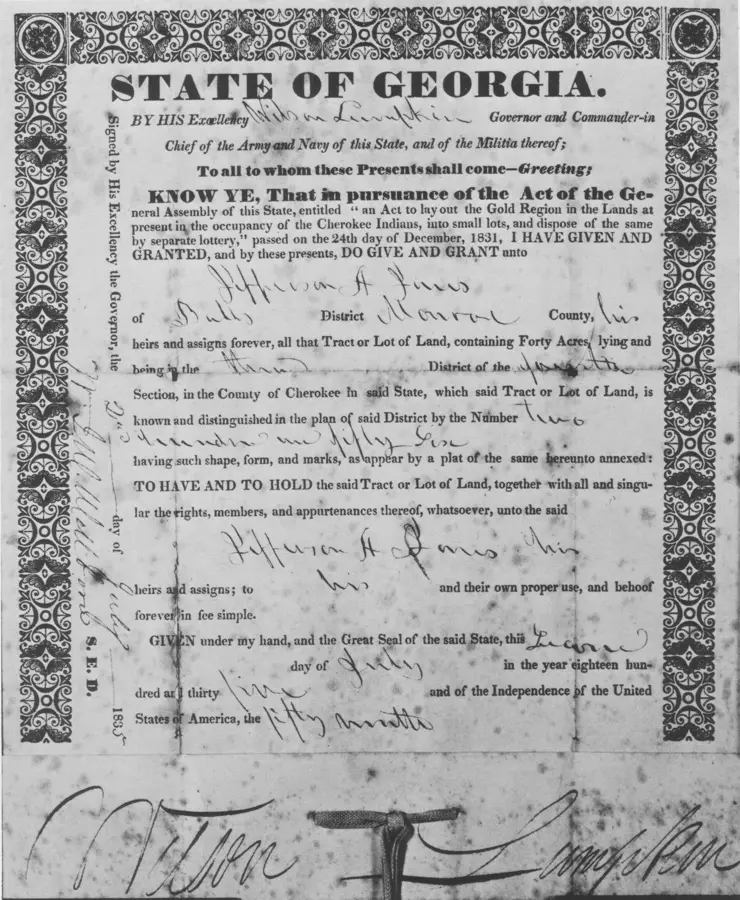
Georgia land grant to a winner of the 1832 Cherokee land lottery. Public domain, via Wikimedia Commons (Rome, Georgia, Sesquicentennial Committee).
Sources: Jackson to John Coffee, April 7, 1832, in Correspondence of Andrew Jackson, ed. Bassett, vol. 4; Horace Greeley, The American Conflict (1864); Perdue & Green (2007).
The other four nations · 1830–1842
The Choctaw, Creek, Chickasaw, and Seminole lost their homelands too, or fought.
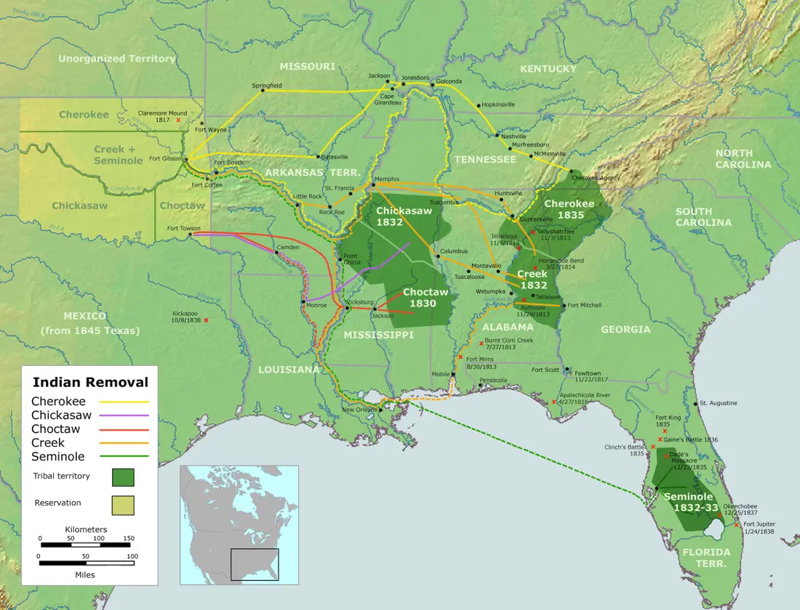
Removal routes of the Five Tribes, 1830s, with former homelands in the Southeast and new lands in Indian Territory (today’s Oklahoma). Map by Nikater after the Handbook of North American Indians, vol. 4. Public domain, via Wikimedia Commons.
Choctaw, 1831–1833: the first nation removed under the act; blizzards and cholera killed thousands.
Creek, 1836–1837: after fraud and violence, the army removed about 15,000 people, some in chains.
Chickasaw, 1837–1838: paid for their own removal from the sale of their land.
Seminole, 1835–1842: fought the Second Seminole War; several hundred stayed in Florida.
Sources: Foreman, Indian Removal (1932); Akers, Living in the Land of Death (2004); Saunt, Unworthy Republic (2020). Death tolls are estimates.
A nation divided · 1832–1835
A small Cherokee faction decided that a bad treaty was better than none.
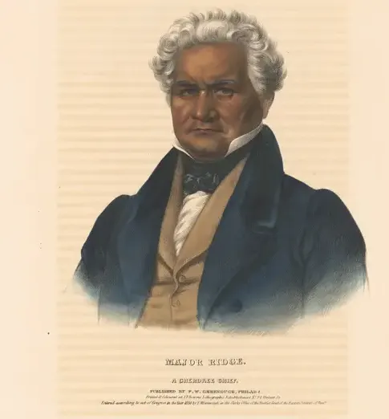
Major Ridge. Hand-colored lithograph, McKenney & Hall, 1838. Library of Congress. Public domain.
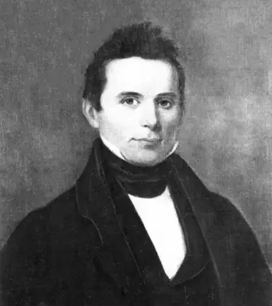
Elias Boudinot (1802–1839). Oklahoma Historical Society, Muriel Wright Collection. Public domain.
National Party: Principal Chief John Ross and most Cherokee refused to sell.
Treaty Party: Major Ridge, his son John Ridge, and his nephew Elias Boudinot believed removal could not be stopped.
1832: Boudinot resigned from the Phoenix when the council would not let him print the case for a treaty.
Cherokee law, 1829: selling national land without the nation's consent was punishable by death.
Both sides wanted the Cherokee to survive. They disagreed about whether staying was possible.
Names: Elias Boudinot was born Gallegina, or Buck, Watie; he took the name of a New Jersey patron. Major Ridge's Cherokee name was Kahnungdatlageh.
The treaty · New Echota, December 29, 1835
At New Echota, a few hundred Cherokee agreed to sell the whole homeland.
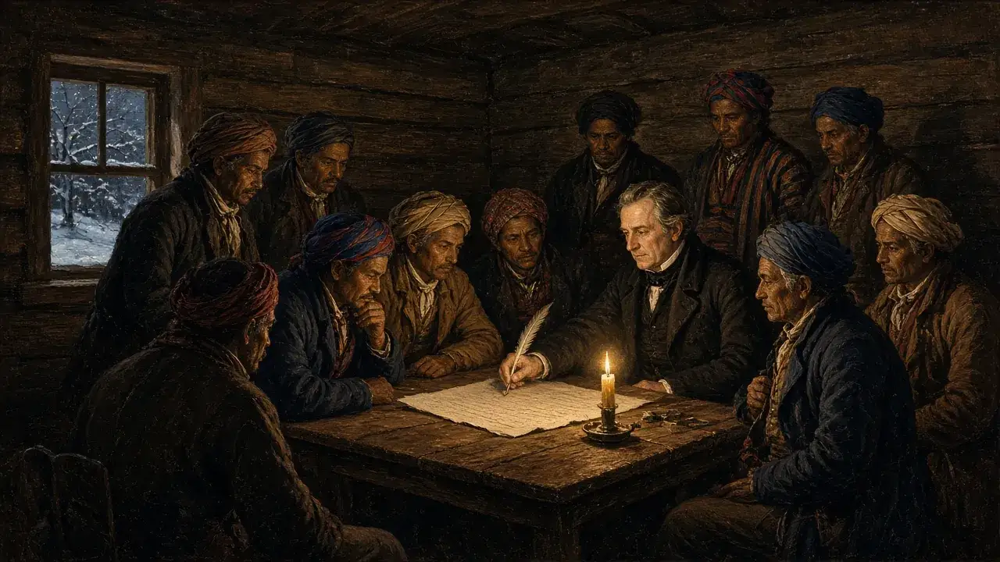
AI-generated historical interpretation (1830s American oil-painting style); not a surviving historical image.
Who: a few hundred Cherokee at most, out of about 16,000; roughly twenty men signed.
The terms: all land east of the Mississippi for $5 million and land in Indian Territory; two years to move.
Not authorized: the Cherokee National Council never approved it; Ross was in Washington.
May 1836: the Senate ratified it 31–15, exactly the two-thirds required; one vote fewer and it would have failed.
The treaty was law to the United States and a fraud to the Cherokee Nation.
Sources: Treaty with the Cherokee, December 29, 1835 (7 Stat. 478); Perdue & Green (2007); Smithsonian NMAI, Nation to Nation.
Primary source · John Ross to the U.S. Senate and House, September 28, 1836
"We are denationalized; we are disfranchised."
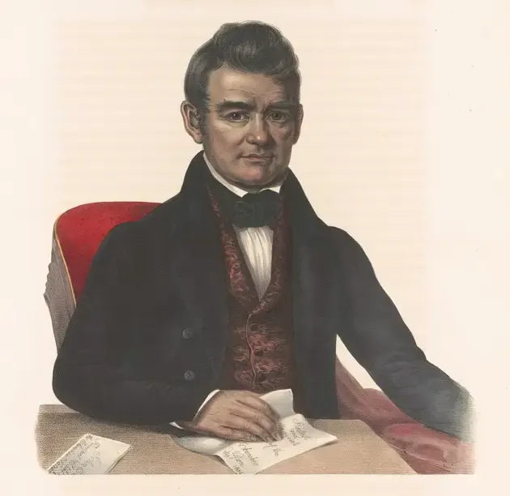
John Ross, principal chief of the Cherokee Nation. Hand-colored lithograph, McKenney & Hall, 1843. Library of Congress. Public domain.
"By the stipulations of this instrument, we are despoiled of our private possessions . . . Our property may be plundered before our eyes; violence may be committed on our persons; even our lives may be taken away, and there is none to regard our complaints. We are denationalized; we are disfranchised. We are deprived of membership in the human family!"
John Ross, letter from Red Clay Council Ground, Cherokee Nation, September 28, 1836
1838: Ross carried to Congress a protest signed by 15,665 Cherokee. Congress did not act.
Read closely, on your own:
What does Ross say the treaty takes besides land?
Why might he call it an "instrument" rather than a treaty?
Despoiled: robbed. Denationalized: stripped of their nation. Disfranchised: stripped of political rights.
Check yourself · on your own
Can you explain how the Cherokee fought removal without going to war?
Answer from memory, in a sentence or two each:
Name three peaceful tools the Cherokee used to defend their homeland between 1827 and 1838.
Why didn't the Supreme Court's 1832 ruling protect them?
Why did the Treaty Party sign at New Echota, and why did most Cherokee reject the treaty?
When you have written your answers, compare them with these possible answers.
×
Possible answers
Any three: a written constitution (1827); the bilingual Cherokee Phoenix (1828); memorials and an address to Congress and the public (1830); lawsuits in the Supreme Court (1831, 1832); Ross's protests and the 15,665-name petition (1836–1838).
The Court had no power to enforce its ruling. Georgia ignored it, and President Jackson, who supported removal, refused to make Georgia comply.
The Treaty Party believed removal could not be stopped and hoped to get money and land before losing everything. Most Cherokee rejected the treaty because a small, unauthorized group signed it without the National Council's approval.
The deadline · May 1838
When the deadline passed, General Winfield Scott told the Cherokee that the army had come.
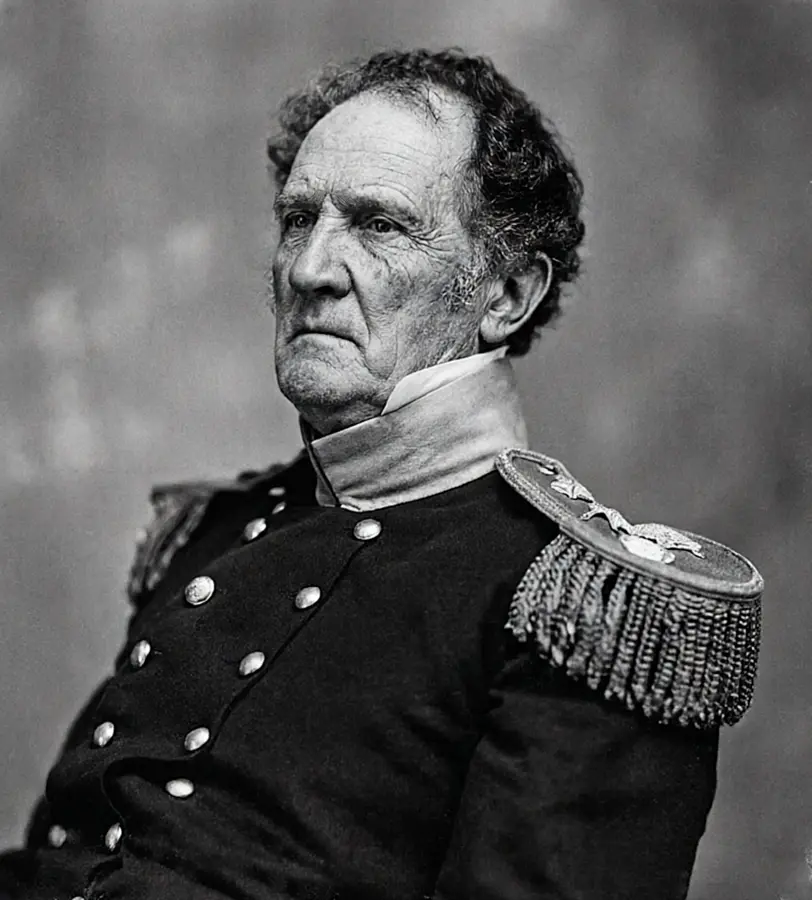
Winfield Scott, daguerreotype by Mathew Brady’s studio, about 1849. Library of Congress. Public domain.
"Cherokees! The President of the United States has sent me, with a powerful army, to cause you, in obedience to the Treaty of 1835, to join that part of your people who are already established in prosperity, on the other side of the Mississippi. . . . The full moon of May is already on the wane, and before another shall have passed away, every Cherokee man, woman and child . . . must be in motion to join their brethren in the far West."
General Winfield Scott, address to the Cherokee, May 10, 1838
The president: Martin Van Buren, Jackson's successor, kept the policy.
By May 23, 1838: only about 2,000 Cherokee had gone west. Scott had about 7,000 regulars and militia.
Scott called his soldiers "your friends." He also called resistance and escape "hopeless."
Soldiers went from farm to farm, and families had minutes to leave.
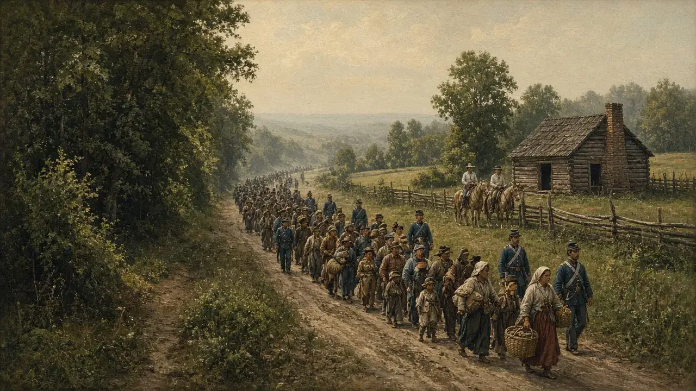
AI-generated historical interpretation (1830s American oil-painting style); not a surviving historical image.
May 26, 1838: the roundup began in Georgia, then spread to Tennessee, Alabama, and North Carolina.
Seized: people were taken in fields, on roads, and at home, often with only the clothes they wore.
Behind the troops: settlers took livestock, furniture, and houses.
"The Cherokees are nearly all prisoners. They have been dragged from their houses, and encamped at the forts and military posts, all over the nation."
Evan Jones, Baptist missionary, Camp Hetzel, Tennessee, June 16, 1838
Sources: Evan Jones, letter of June 16, 1838 (Baptist Missionary Magazine, 1838); Perdue & Green (2007); Neugin in Foreman (1932).
The stockades · summer 1838
Thousands waited in stockades and camps through a summer of heat and disease.
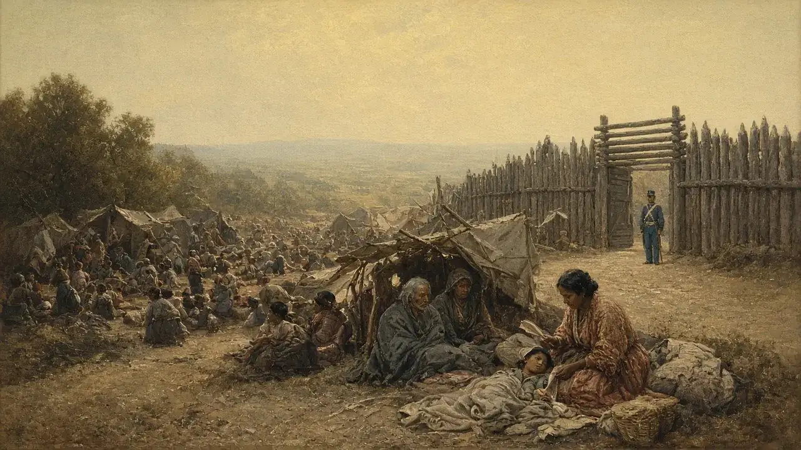
AI-generated historical interpretation (1830s American oil-painting style); not a surviving historical image.
The camps: forts and holding camps, the largest near the Cherokee Agency on the Hiwassee River in Tennessee.
June 1838: the army sent about 2,800 people west by river; heat and sickness were so deadly that Scott halted removal until fall.
Disease: dysentery, measles, and whooping cough spread through crowded camps.
Ross's request: the Cherokee won the right to run their own removal, in 13 detachments, once the heat broke.
The dying started before the walking.
Sources: NPS, Trail of Tears National Historic Trail; Perdue & Green (2007); Thornton, "Cherokee Population Losses" (1984).
The trail · October 1838–March 1839
Most Cherokee traveled about 1,000 miles west through a bitter winter.
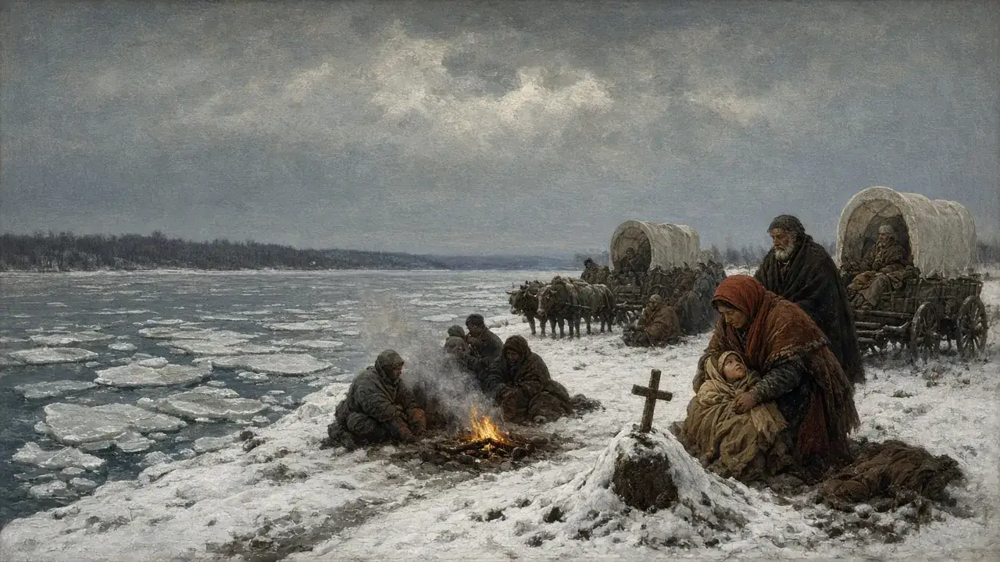
AI-generated historical interpretation (1830s American oil-painting style); not a surviving historical image.
Detachments: groups of about 1,000, led by Cherokee conductors, left between August and December 1838.
The road: most went overland through Tennessee, Kentucky, Illinois, Missouri, and Arkansas, on foot, with the sick in wagons.
Winter: ice on the Ohio and Mississippi stranded groups for weeks in southern Illinois.
February 1839: Ross's wife, Quatie, died near Little Rock.
Every delay meant more days of cold, short rations, and graves beside the road.
Sources: NPS, Trail of Tears National Historic Trail; Foreman, Indian Removal (1932); Perdue & Green (2007).
The cost · all removals, 1830s
More than 10,000 Native people died in the removals, the Park Service says, and possibly far more.
Nation
Removed
Estimated deaths
Choctaw, 1831–1833
~12,500 went west
~2,500 (some estimates to 6,000)
Muscogee (Creek), 1836–1837
~14,500–15,000
~3,500 on the trail and in the first year
Chickasaw, 1837–1838
~4,000–5,000
500+ (smallpox); no full count
Cherokee, 1838–1839
~16,000
~4,000 (range 2,000–8,000)
Seminole, 1835–1842
~3,000
unknown; war and removal overlap
Potawatomi “Trail of Death,” 1838
859
42 recorded, 28 of them children
Sum of these estimates
~50,000+
about 8,500–18,500
Every number is an estimate with a gap behind it. No one kept a full count, and some nations' dead were never counted at all.
Removal routes, 1830s (detail repeated from the Five Tribes slide). Map by Nikater. Public domain, via Wikimedia Commons.
Sources: National Park Service, Fort Smith NHS, “Stories of the Trail of Tears”; NPS, Trail of Tears NHT Historical and Interpretation Study (2007); Encyclopedia of Oklahoma History and Culture, “Trail of Tears”; Haveman, Rivers of Sand (2016); Thornton, Ethnohistory 31:4 (1984); Kansas Historical Society, “Potawatomi Trail of Death.”
Arrival · Indian Territory, 1839
The survivors rebuilt a nation in the West, but removal's wounds turned deadly.
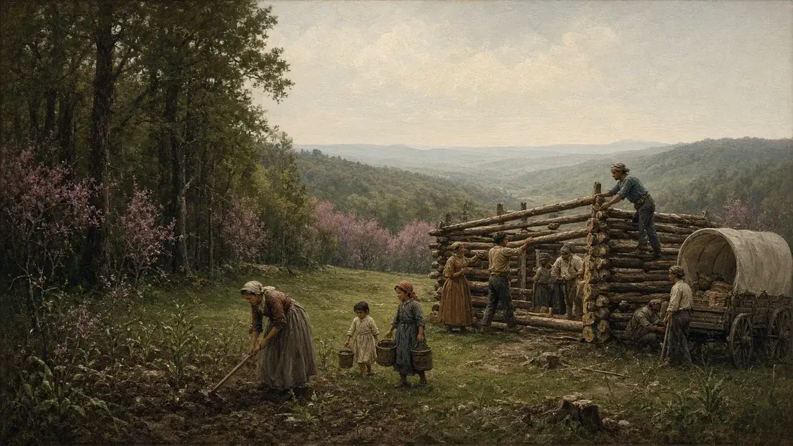
AI-generated historical interpretation (1830s American oil-painting style); not a surviving historical image.
Rebuilding: new farms, schools, and a capital at Tahlequah, in today's Oklahoma.
June 22, 1839: Major Ridge, John Ridge, and Elias Boudinot were killed by Cherokee who held them guilty under the law against selling land.
July 1839: an Act of Union joined eastern and western Cherokee under one constitution.
Those who stayed: several hundred Cherokee in the North Carolina mountains became the ancestors of today's Eastern Band.
Removal emptied a homeland. It did not end a nation.
Can you explain how removal was carried out, from deadline to arrival?
Answer from memory, in a sentence or two each:
What happened to Cherokee families after the May 23, 1838 deadline passed?
Why did many people die before the march west even began?
Why do historians give the Cherokee death toll as a range rather than a single number?
When you have written your answers, compare them with these possible answers.
×
Possible answers
General Scott's soldiers and state militia rounded them up from their homes and fields, often with only what they could carry, and held them in stockades and camps; settlers took their property.
Thousands were crowded into camps for months in a hot, dry summer with poor water and food, so diseases like dysentery, measles, and whooping cough spread. The first river detachments in June also suffered heavy losses.
Records were incomplete, and studies count different things: deaths on the trail only, or also in the camps and the first year in the West, or the total population loss. About 4,000 is the most-cited estimate; some argue for about 8,000.
Your capstone
The Ethnic Cleansing Project
Trail of Tears Document-Based Assignment
You have heard the story. Now you will be the historian: test it against the documents and decide what to call it.
Historians now ask whether a newer word fits this older story: ethnic cleansing.
Where the term came from
It spread in 1991–1992 from Serbian and Croatian etničko čišćenje, used by perpetrators and nationalist media in the wars of Yugoslavia's breakup. Western journalists and diplomats adopted it.
Why it is uncomfortable
"Cleansing" was a euphemism. It made driving people out sound like cleaning something dirty. When we use the term, we should remember whose word it was.
What it is not
It is not a crime defined on its own in international law, as genocide is. It is a descriptive term; the acts it describes can be prosecuted as crimes against humanity.
The word is new. The question is old: when is moving a people really driving them out?
Euphemism: a mild word used in place of a harsh one. Anachronism: judging the past with ideas from a later time; this is why you will test the term against evidence instead of assuming it. The Pierian Spring explains how historians handle it.
UN Commission of Experts (1993): "rendering an area ethnically homogenous by using force or intimidation to remove persons of given groups from the area." Interim report S/25274, para. 55, quoted in the Final Report, S/1994/674, para. 129. Also: course framework, "Understanding Ethnic Cleansing".
The capstone's definition
Your capstone defines ethnic cleansing as forced removal meant to make a territory homogeneous.
Working Definition: Ethnic Cleansing"Ethnic cleansing is the systematic forced removal of an ethnic, racial, or religious group from a geographic area through violence, intimidation, forced deportation, or other coercive means, with the intent to create an ethnically homogeneous region. It is distinct from genocide in that the primary goal is removal rather than complete physical destruction (though the two can overlap)."
Systematic
Organized and deliberate, not random violence
Forced Removal
Displacement through coercion, not voluntary migration
Not every movement of people is ethnic cleansing. Look for force, a targeted group, and a goal of emptying a territory.
Term
How it differs from ethnic cleansing
Voluntary migration
People choose to move, for land, work, or family. No one forces them out.
War refugees
People flee the fighting itself. No one plans to empty the area of their group, and they can usually return.
Population transfer or exchange
Governments agree to move groups. It can still be ethnic cleansing when the people moved have no real choice: the 1923 Greece–Turkey treaty forced about 1.2 million Orthodox Christians and about 400,000 Muslims out of their homelands by religion.
Genocide
The aim is to destroy the group, not just remove it. The two can overlap.
Check yourself: The 1830 act says tribes "may choose" to move. Which row does that wording claim, and what evidence moves it into ethnic cleansing?
Sources: course framework; Convention Concerning the Exchange of Greek and Turkish Populations (Lausanne, January 30, 1923).
Your capstone · starts today
Now you will judge the case yourself, using the primary sources.
Strongly encouraged: compare another case from the case studies. Then finish this lecture's Pierian Spring, below. Next class: Chapter 12, Tuesday, November 3.
The capstone's tool · Analytical Checklist
The worksheet tests a case against seven characteristics, one piece of evidence at a time.
1
Targeted Group Identification
Was a specific ethnic, racial, or religious group targeted?
2
Intent and Goal
Is there evidence of intent to remove the group from a territory?
3
Methods of Removal
Was forced deportation or relocation used?
4
Systematic Nature
Was the process organized or coordinated rather than random?
5
Scale and Scope
Were large numbers of people affected?
6
Accompanying Atrocities
Did mass killings or massacres occur?
7
Outcomes
Did the population demographics change significantly?
For each one
Mark Yes, Partly, or No, cite evidence from the reader, then write a 2–4 sentence conclusion.
Source: Trail of Tears worksheet, "Analytical Checklist." Each characteristic has several more guiding questions on the worksheet; the first is shown here.
Applying the tool · a model row
Here is what one finished row looks like: a choice, quoted evidence, your reasoning, and citations.
Row
Choice
Evidence and reasoning
Citation
4. Systematic Nature
Yes
Congress paid for removal ("the sum of five hundred thousand dollars is hereby appropriated"), a treaty set a deadline ("they shall remove to their new homes within two years"), and the army enforced it ("My troops already occupy many positions in the country that you are to abandon"). A law, a deadline, and troops show an organized state plan, not random violence.
Doc 1, Indian Removal Act, May 28, 1830; Doc 3, Treaty of New Echota, Dec. 29, 1835; Doc 5, Winfield Scott, address, May 10, 1838 (+ URLs)
2. Intent and Goal (short model)
Partly
Jackson wanted "the removal of the Indians beyond the white settlements," a goal of emptying the land. But the act offered land to tribes that "may choose" to exchange. Met: intent to remove. Not clearly met in the 1830 law: force.
Doc 2, Jackson, Dec. 6, 1830; Doc 1
Model rows: do not copy. Use your own evidence and your own words. Quotations are from the reader, Docs 1, 2, 3, and 5.
Applying the tool · the hard cases
Two characteristics, intent and atrocities, demand the most careful judgment.
Intent and Goal
Removal, in his own words: Jackson wanted Native nations "beyond the white settlements."
But the language was choice: the act said "may choose"; Jackson called removal "benevolent."
Worksheet: "Were stated justifications (e.g., security, progress, civilization) used to legitimize removal?"
Accompanying Atrocities
No single great massacre marked the Cherokee removal of 1838.
But thousands died of disease, exposure, and hunger in conditions officials created and could foresee.
Worksheet: "Were basic needs (food, water, shelter, medical care) denied or withheld?"
Does a kind-sounding motive change the act? Does death by neglect count like death by violence? You will decide, with evidence.
Bookend · Oklahoma, 1932
Nearly a century later, Rebecca Neugin still remembered the stockade.
AI-generated historical interpretation (1830s American oil-painting style); not a surviving historical image. Repeated from the opening slide.
1838: a three-year-old girl watched her mother stop her father from fighting.
In between: a constitution, a newspaper, petitions, a Supreme Court victory, a disputed treaty, an army, and a winter road.
1932: she told her story to a historian, and it became evidence.
The Cherokee answered with every peaceful tool a republic honors. The answer they got was the army.
Source: Rebecca Neugin, in Foreman, Indian Removal (1932).
Narrative review · on your own
Can you tell the story of Cherokee removal from beginning to end?
Write a paragraph of 6–8 sentences that tells the story in order, using at least six of these terms:
Cherokee constitution (1827)
Indian Removal Act (1830)
Worcester v. Georgia (1832)
Treaty Party
Treaty of New Echota (1835)
John Ross
Winfield Scott and the roundup (1838)
stockades
about 4,000 deaths, a range
Then add one sentence: which of the seven characteristics is hardest to judge for this case, and why?
Beyond the lecture
Pierian Spring
Required Independent Study
Today's lecture ends here. Continue on your own: the stories below finish this chapter's history, and each ends with a review question to answer.
"A little learning is a dang'rous thing; Drink deep, or taste not the Pierian spring."Alexander Pope, An Essay on Criticism (1711)
The Creek lost their land to a forbidden treaty, then to fraud, and then to the army.
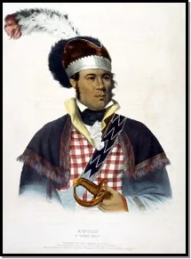
William McIntosh (Tustunnuggee Hutkee). Hand-colored lithograph, McKenney & Hall, 1836–1844. Public domain.
February 1825: William McIntosh signed the Treaty of Indian Springs, selling Creek land in Georgia against Creek law. On April 30, Creek warriors killed him under that law.
1826–1832: a new treaty replaced Indian Springs, but Georgia took the land anyway; in Alabama the 1832 Treaty of Cusseta gave Creek individual plots, and speculators cheated many out of them.
1836–1837: after some Creek fought back, the army removed about 15,000 people, some of the men in chains. In October 1837 the steamboat Monmouth sank on the Mississippi; about 300 Creek drowned.
Review question: How did both Creek law and U.S. treaties shape what happened to William McIntosh and to Creek land?
Sources: Green, The Politics of Indian Removal: Creek Government and Society in Crisis (1982); Saunt, Unworthy Republic (2020); Foreman (1932).
Pierian Spring · The Choctaw, 1830–1833
The Choctaw were the first nation removed under the act, and they moved in the dead of winter.
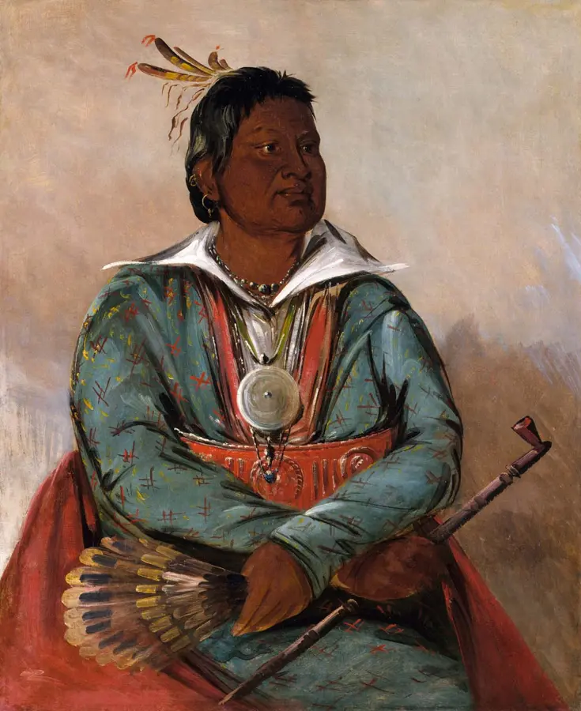
Mó-sho-la-túb-bee, Choctaw chief, by George Catlin, 1834. Smithsonian American Art Museum (1985.66.294). Public domain.
September 1830: under heavy pressure, Choctaw leaders signed the Treaty of Dancing Rabbit Creek, giving up their Mississippi homeland.
1831–1833: removal in three waves met blizzards, floods, and cholera; estimates of the dead run to about 2,500, and some higher.
Article 14: families could stay as U.S. citizens on their own land, but officials and speculators blocked most claims.
"We as Choctaws rather chose to suffer and be free, than live under the degrading influence of laws, when our voice could not be heard in their formation."
George W. Harkins, farewell letter to the American people; printed in the Cherokee Phoenix, January 28, 1832
Review question: What does Harkins mean by laws made "when our voice could not be heard in their formation"?
Sources: Treaty of Dancing Rabbit Creek (1830); Akers, Living in the Land of Death (2004); Harkins, "Farewell Letter to the American People" (1832).
Pierian Spring · The Chickasaw, 1832–1838
The Chickasaw paid for their own removal, and it still cost them dearly.
October 1832: the Treaty of Pontotoc Creek ceded Chickasaw land in northern Mississippi; the land would be sold and the money used to pay for removal.
January 1837: with no western land of their own yet, the Chickasaw agreed at Doaksville to settle within the Choctaw Nation.
1837–1838: roughly 4,000–5,000 Chickasaw moved west with property and enslaved people; smallpox and spoiled government rations killed many in the West.
The lesson: even the best-negotiated removal was still removal.
Review question: Did negotiating better terms make Chickasaw removal any less forced? Use the definition's phrase "other coercive means" in your answer.
Sources: Treaty of Pontotoc Creek (1832); Treaty of Doaksville (1837); Paige, Bumpers & Littlefield, Chickasaw Removal (2010); Foreman (1932).
Pierian Spring · The Seminole, 1832–1842
The Seminole fought removal for seven years, and some were never removed.
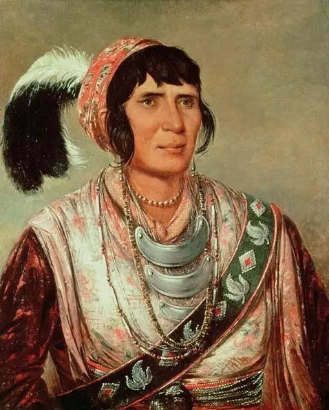
Osceola, by George Catlin, 1838, painted at Fort Moultrie. Public domain.
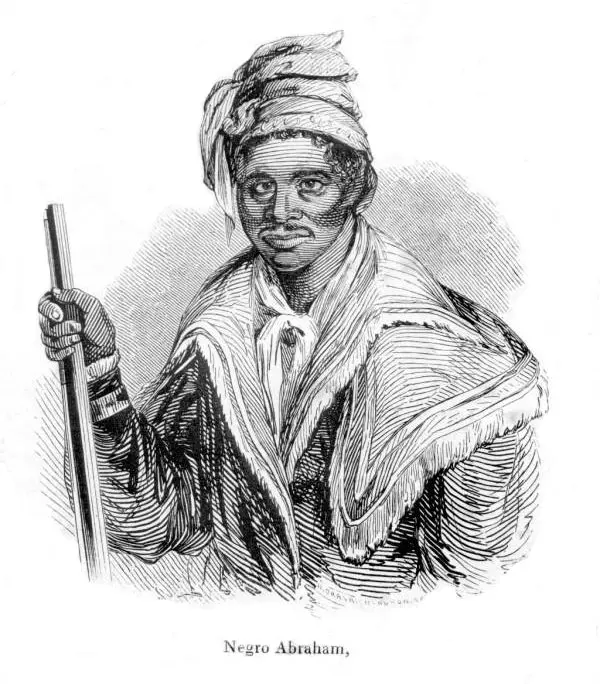
Abraham, Black Seminole leader and interpreter. Engraving by N. Orr, 1848. Public domain.
1832: some Seminole leaders signed the Treaty of Payne's Landing; many Seminole rejected it.
1835–1842: the Second Seminole War, the costliest U.S. war against a Native nation in this era.
October 1837: the army seized Osceola under a flag of truce; he died in prison in January 1838.
Black Seminoles: people of African descent, many escaped from slavery, lived and fought with the Seminole.
Review question: Why did the presence of Black Seminoles make white southerners more determined to remove the Seminole?
Sources: Mahon, History of the Second Seminole War (rev. 1985); Miller, Coacoochee's Bones (2003). Several hundred Seminole stayed in Florida.
Pierian Spring · The Treaty Party, 1835–1846
The Treaty Party said it signed to save the Cherokee, and three of its leaders died for it.
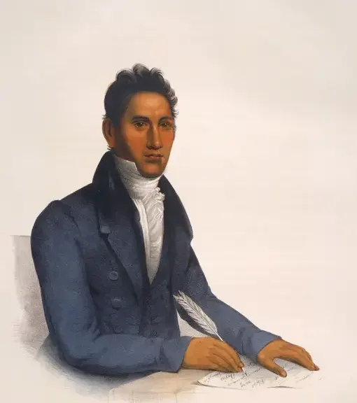
John Ridge, son of Major Ridge. McKenney & Hall lithograph, 1836–1844. Public domain.
Their argument: Georgia's pressure would destroy the Cherokee if they stayed; a treaty could at least secure money and land in the West.
1837: Boudinot answered Ross in print, accusing him of leading the people into false hope.
June 22, 1839: Major Ridge, John Ridge, and Boudinot were killed in separate attacks on the same day.
Survivor: Boudinot's brother Stand Watie escaped; feuding lasted until a treaty in 1846.
Review question: Were the Treaty Party realists or traitors? Make the strongest case for each side before giving your view.
Sources: Boudinot, Letters and Other Papers Relating to Cherokee Affairs (1837); Wilkins, Cherokee Tragedy: The Ridge Family and the Decimation of a People (rev. 1986).
Pierian Spring · Those who stayed, 1838–1868
Several hundred Cherokee stayed in the North Carolina mountains, and their descendants are still there.
The Oconaluftee Cherokee
Families along the Oconaluftee River lived on land outside the Nation's borders under an 1819 treaty, which gave them a legal claim to stay.
William Holland Thomas
A white trader adopted by the leader Yonaguska bought land for them in his own name, because North Carolina would not let them own it.
The Tsali story
In 1838 Tsali and his family killed two soldiers and Tsali was later executed. The legend that his sacrifice won the right to stay is not supported by the records.
Today the Eastern Band of Cherokee Indians lives on the Qualla Boundary in western North Carolina.
Review question: Why might a community prefer the Tsali legend to the legal explanation of why it survived?
Sources: Finger, The Eastern Band of Cherokees, 1819–1900 (1984); Mooney, Myths of the Cherokee (1900); Eastern Band of Cherokee Indians.
Pierian Spring · Counting the dead
Historians reach different death tolls because they count different things.
About 4,000
Dr. Elizur Butler, missionary doctor with a detachment, 1839. The most-cited figure.
About 4,000
James Mooney, ethnologist, 1900; he repeated the figure in his history of the Cherokee.
About 2,000
A 1973 study based on detachment records counted deaths during the journey itself.
About 8,000
Russell Thornton, 1984: deaths "may have been twice the generally accepted figure," counting population loss over the whole period.
The question behind every number: who is counted, where, and over how long?
Review question: Which estimate would you use in your capstone, and how would you describe the uncertainty in one honest sentence?
Sources: Thornton, Ethnohistory 31:4 (1984); Mooney, Myths of the Cherokee (1900); Perdue & Green (2007).
Pierian Spring · Ethnic cleansing or genocide?
Historians disagree about which word best fits Indian Removal.
"Ethnic cleansing"
Historian Gary Clayton Anderson, Ethnic Cleansing and the Indian (2014), argues that U.S. policy aimed mainly to remove Native peoples from land, so ethnic cleansing is the more accurate term for most of it.
"Genocide"
Historian Jeffrey Ostler, Surviving Genocide (2019), argues that removal policies, carried out knowing they would kill many, belong within a history of genocide that Native nations survived.
Your worksheet's definition notes that the two "can overlap." Both historians would agree the Cherokee were driven from their homeland by force.
Review question: Which part of the definition, "removal rather than complete physical destruction," matters most for deciding between the two words, and why?
Sources: Anderson, Ethnic Cleansing and the Indian: The Crime That Should Haunt America (2014); Ostler, Surviving Genocide: Native Nations and the United States from the American Revolution to Bleeding Kansas (2019).
Pierian Spring · Is a 1990s word fair for the 1830s?
Historians may use a later word for an earlier event if they test it against the evidence.
Why historians use it
A term names a pattern of acts and aims, not the words people used at the time. "Genocide" was coined in 1944 by Raphael Lemkin, and historians apply it to earlier events. The test is whether the evidence fits the definition.
Why to be careful
A modern label can hide how people saw things then, or skip the hard parts of the evidence. Use the term only after you check each characteristic, and say where the fit is weak.
People in the 1830s had their own words. Evan Jones: "The Cherokees are nearly all prisoners" (Doc 7). John Ross: "we are despoiled of our private possessions … We are denationalized" (Doc 4).
Review question: Is it fair to call the events of 1838 "ethnic cleansing"? Give one reason yes and one reason for caution.
Sources: primary source reader, Docs 4 and 7; Raphael Lemkin, Axis Rule in Occupied Europe (1944).
Pierian Spring · Handling sources with care
Some of the most famous Trail of Tears stories are the least reliable.
"Let him enforce it"
Jackson's famous line about John Marshall first appeared in print in 1864. His real 1832 letter said the ruling "has fell still born."
John G. Burnett, 1890
A "soldier's story" written for his 80th birthday, 52 years after the events. Some historians doubt parts of it, and its authorship has been questioned.
Quatie Ross's blanket
Quatie Ross did die near Little Rock in 1839. The story that she gave her blanket to a sick child comes from later retellings, not from records of the time.
Rebecca Neugin, 1932
A real memory, recorded 94 years later. Test it: does it match letters written in 1838, like Evan Jones's?
Address or order?
Scott spoke to the Cherokee on May 10, 1838. His orders to his troops came later in May. Check which document a quote comes from.
Your rule
Ask who wrote it, when, how they knew, and whether a source from the time agrees.
Review question: Pick one document from your primary source reader and explain how close its author was to the events, in time and in place.